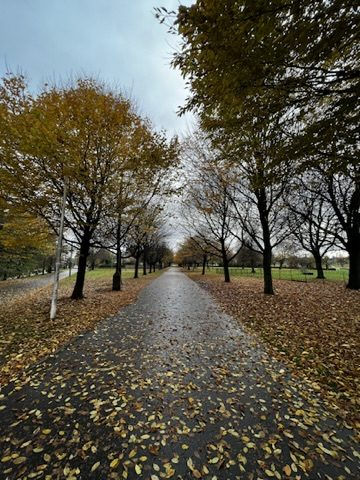
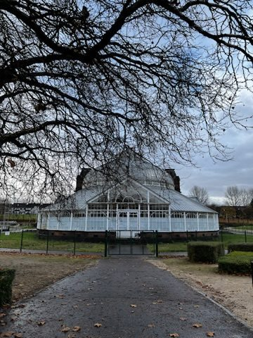
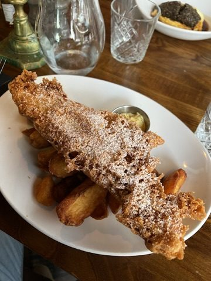
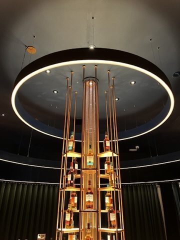
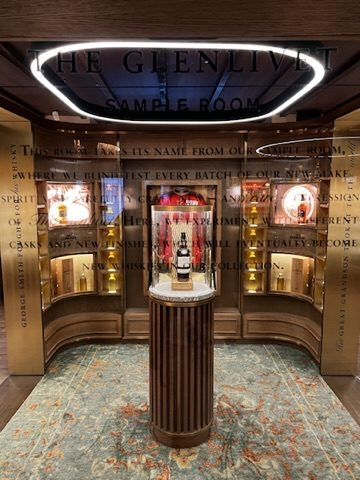
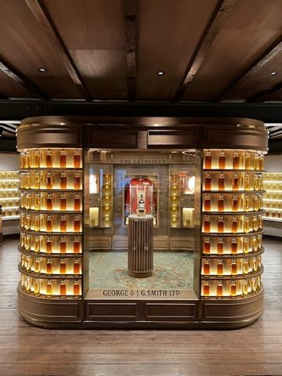
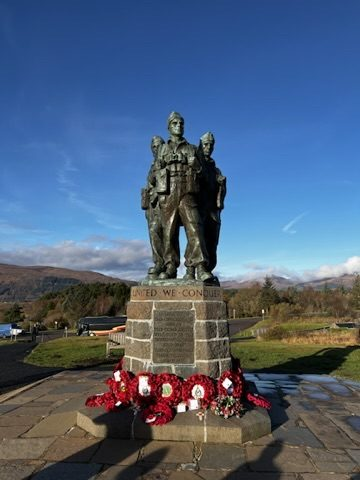
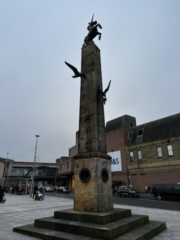

13-18 Nov / Glasgow - Highlands - Inverness - Stirling
This is where the trip became colder and moodier.
Scotland gave the route its strongest atmosphere: fallen leaves, dark roads, whisky rooms, quiet monuments, and a landscape that looked better the greyer it became.
Back to UK and Scotland trip
Glasgow
Autumn paths made Glasgow feel quiet first.
The Glasgow photos are all fallen leaves, bare branches, glasshouse lines, and warm plates. It is a softer start to Scotland before the route opens up into the Highlands.



Highlands road
The best frame was the road itself.
The Highland stretch has the exact kind of scenery that makes a trip feel larger than its itinerary: wet roads, low clouds, brown grass, and mountains that do not need much explanation.
Cairngorms
Warm interiors after the cold outside.
The whisky-room photos add a nice change in texture: dark green walls, glowing shelves, bottle displays, and the feeling of stepping into somewhere warmer after too much wind.



Inverness and Stirling
Stone monuments and wide skies carried the north.
The later Scotland stretch feels quieter in the photos: monuments, open sky, and the sense of moving through colder places before Edinburgh brought the city back in.

